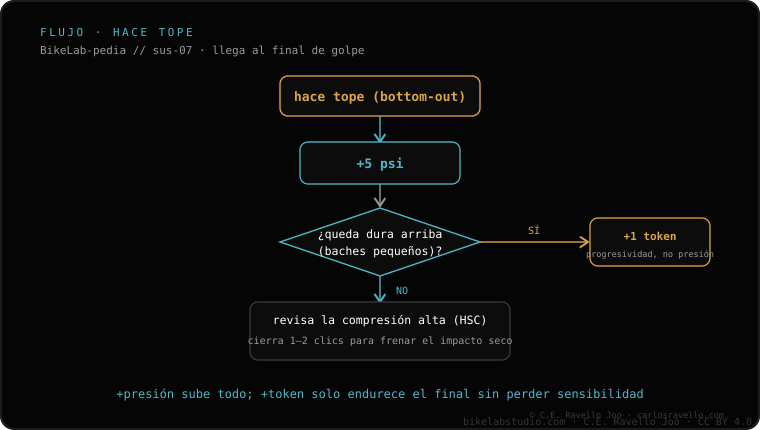

Hacer tope es agotar todo el recorrido en golpes grandes; llegar al fondo una vez por salida es normal y deseable. Si pasa seguido: 1) sube presión de 5 en 5 psi según tu presión por peso; 2) si entonces se siente dura arriba, NO subas más presión: añade un token o volume spacer para ganar progresividad solo al final; 3) revisa la compresión en alta (HSC). La decisión de cuánto firmar es tuya.
No confundas un tope ocasional con un problema. El aviso es cuando hace fondo seguido, en golpes que no son los más fuertes del día.
El orden, paso a paso
1 · Sube presión de 5 en 5 psi — Si hace tope de forma repetida, te falta soporte. Añade 5 psi, prueba en el mismo tramo y repite hasta que deje de irse al fondo salvo en el golpe más grande de la salida.
2 · Si arriba se siente dura, no subas más presión — Cuando ganas soporte pero pierdes el copiado de los baches pequeños, añade 1 token / volume spacer. El token endurece solo el final del recorrido (progresividad) sin afectar el principio, así dejas de hacer fondo sin que se ponga dura arriba.
3 · Revisa la compresión en alta (HSC) — La HSC controla cómo frena la suspensión en golpes rápidos y fuertes, que son los que provocan el tope. Ajústala en pasos y prueba. Cuánto firmar depende de tu terreno y tu estilo.

El flujo: presión primero; token si arriba se endurece; y la compresión en alta al final.
Error común: seguir subiendo presión para que no haga fondo. Llega un punto en que la suspensión se vuelve dura arriba y deja de copiar los baches pequeños. Ahí toca token, no más presión: el token actúa solo al final del recorrido.
¿Sigue haciendo tope?
Cuéntanos el modelo, tu peso, la presión y los tokens que llevas y te orientamos sobre qué tocar primero. Escríbenos por WhatsApp
Preguntas frecuentes
¿Es malo que llegue al fondo?
Una vez por salida es normal y deseable: usas todo el recorrido. El problema es hacer tope seguido en golpes que no son los más grandes del día.
¿Subo presión o pongo un token?
Primero sube presión de 5 en 5 psi. Si entonces se siente dura arriba, añade un token para ganar progresividad solo al final, sin endurecer el principio.
¿Qué más reviso?
La compresión en alta (HSC), que frena los golpes rápidos. Ajústala en pasos. Cuánto firmar lo decides tú según el terreno.